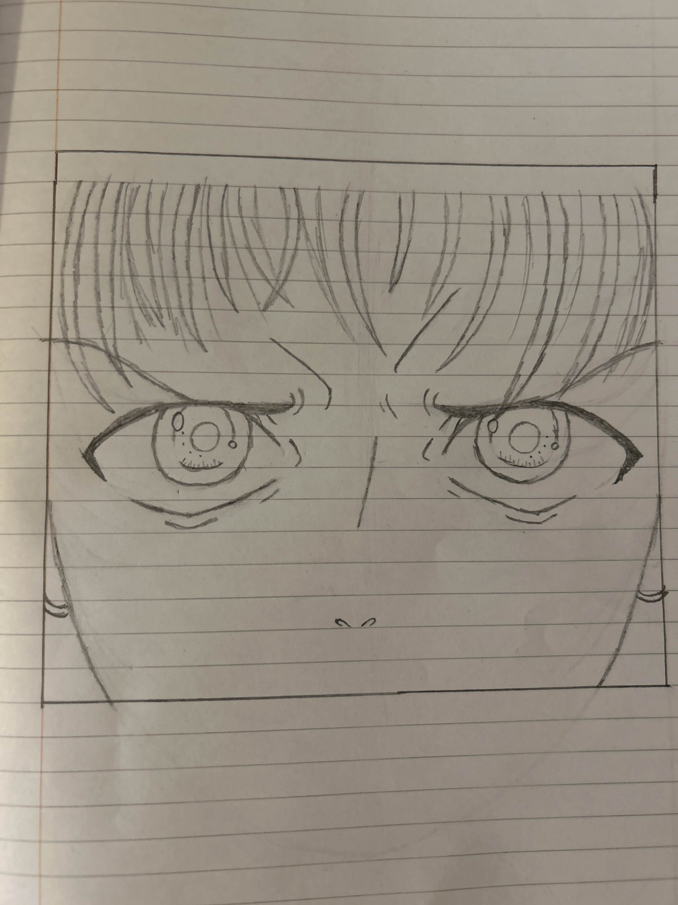

This is an anime photo of a surprised girl.
Step 1: Start with your guidlines to convey shock, make the eyes wide and and arch
the eyebrows upwards.
Step 2: Leave space around each iris, so more of the whites of the eyes are visible.
Add the pupils.
Step 3: Add reflections to give the eyes life. Clean up the guidlines and refine the details.
Following the above steps should give you the image to the left.
This is an anime photo of an excited girl.
Step 1: Similar to shocked eyes, excited eyes are wide, with eyebrows raised.
Step 2: Add some diamond-shaped sparkles to convey excitement. Sketch the eyelashes.
Step 3: Add more reflections to the eyes. Highlights on the cheeks reveal a slight blush.
Following the above steps should give you the image to the right.

This is an anime photo of a determined boy.
Step 1: The eyes of a determined character are narrow, with low, furrowed eyebrows.
Step 2: Detail the irises and make and make the pupils small. Wrinkles around the eyes
convey concentration.
Step 3: Add further frown lines, shading and small reflections in the eyes to finish.
Following the above steps should give you the image to the left.